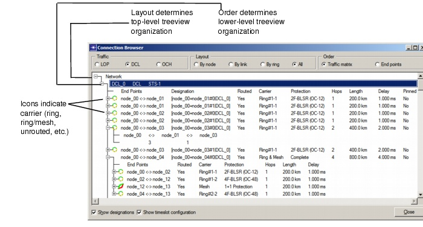
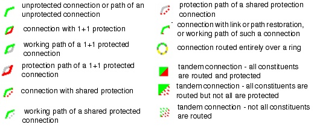

Viewing and Configuring Objects > Connection Browser
Connection Browser
The Connection Browser shows the connections on the LOP, DCL, and OCH layers. The treeview also shows the capacity and (if the traffic matrix was routed) additional details about each connection: number of hops, length, delay, and so on.
To open the Connection Browser, choose Network > Connection Browser or click on the Browse Connection button in the toolbar. For information about the viewing controls, see Table 4-11-Connection Browser: Controls. For information about the fields and icons shown in the treeview, see Table 4-10-Connection Browser: Treeview and Figure 4-16-Icons Used in Connection Browser.
Figure 4-15 Connection Browser at DCL Layer

- The traffic matrix, bit rate and end points of a connection (can be ordered in different ways, as described in Table 4-11-Connection Browser: Controls)
- Designation—The user assigned designations of a connection. This field is displayed when you select the option "Show designations."
- Capacity—The capacity (number of units) of the connection
- Routed—Yes if the connection is routed, No if not. In Failure Analysis mode, this field also indicates whether the connection is Lost or Recovered.
- Carrier—Whether the connection was carried on Mesh, Ring, Ring & Mesh or Partial (that is, partly on rings (routed), partly on mesh (unrouted)). For more information, see Ring Design .
- Protection—The protection type
- Hops—The number of hops of the path(s)
- Length—The length (in km or miles) of the path(s)
- Delay—The end-to-end delay of the connection
- Pinned—Yes if the connection is pinned, No if not
- Route—Route the selected connection (see Manual Routing)
- Tear Down—Tear down the selected connection (see Tearing Down a Traffic Matrix)
- Pin/Unpin—See Pinning and Unpinning Connections
- Routing Constraints—See Constraint-Based Routing
- Hardwired in Nodes—Specify connection as hardwired (see Patch Panel)
- Topological Constraints—See Topological Routing Constraints
- Set Designation—Assign a distinguishing identifier or name to a connection
- Set Required Availability (OCH layer only)—Sets the service availability target of the connection. This number is used in the Availability Report.
- Client Service Identifiers (DCL layer only)—Allows to add/remove service identifiers of a DCL connection to relate them with a particular service.
- Server Service Identifiers (OCH layer only)—Allows to add/remove service identifiers of an OCH connection to allow only particular DCL connections with matching service identifiers to be routed over the OCH connection.
A connection that is routed over multiple rings, or partly over rings and partly over the mesh, is called a tandem connection, which is composed of different components. You can click `+' to view details about these components.If a connection (or connection component) is a 1 + 1 protected connection, or was routed on a UPSR ring, you can click on the `+' sign to expand the connection (or connection component) and view the working and protection paths, as described in Viewing Paths Using the Connection Browser.
Figure 4-16 Icons Used in Connection Browser

| Home © 1987-2007 OPNET Technologies, Inc. All Rights Reserved. This software may be covered by one or more U.S. Patents. See complete patent notice in the Legal Notices section. OPNET Support Center |